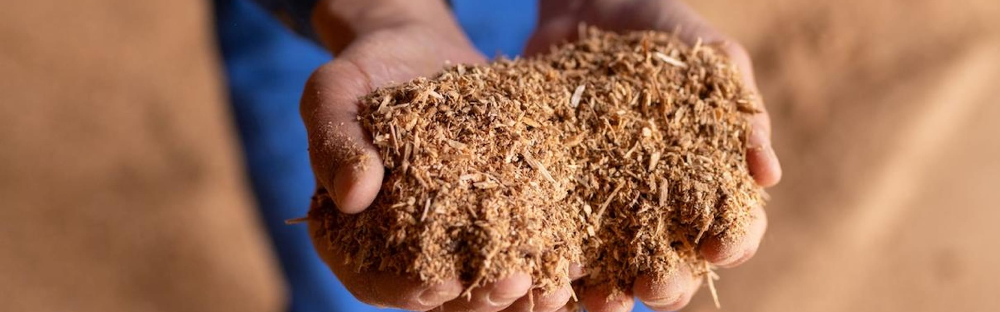
自然の生んだ流木が、
私たちの暮らしに循環する
バイオマス燃料
流木で電気を生み出す
大雨や雪崩などで山から流れ出た流木は、ダムに漂着します。
これらの流木は放置すると発電に支障をきたすため、
定期的に回収しています。
かんでんエルファームでは、この回収された流木を丁寧に選別し、
専用の機械で細かく粉砕して木質チップを製造。
バイオマス発電燃料として有効活用しています。
-
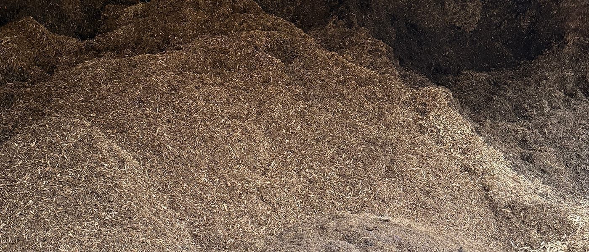
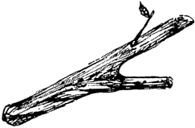
バイオマスとは？ −自然の恵みをエネルギーに−
「バイオマス」は、石油や石炭などの化石燃料を除いた、
動植物など生物由来の再生可能な資源のことをいいます。
木質チップも、その代表的なバイオマス燃料のひとつ！
燃焼時に地球温暖化の原因となるCO₂の排出を抑え、
カーボンニュートラルに貢献できるということが大きな特徴です。
エルファームはコレ！
-
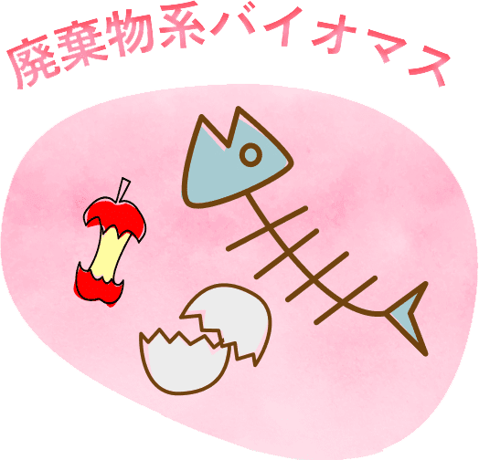
- 畜産資源
- 家畜排泄物など
- 食料資源
- 加工残渣、
生ごみなど
-
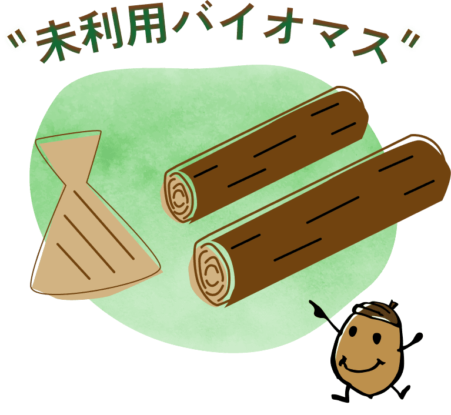
- 林産資源
- 林地残材
- 農産資源
- 稲わら、もみ殻など
-
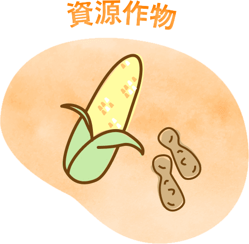
- 糖質資源
- さとうきび、
てんさいなど
- 油脂資源
- なたね、大豆、
落花生など
かんでんエルファームの製造する木質チップは「再生可能エネルギー固定価格買取制度（FIT）」の認定を受けた発電所で使用することができる木質バイオマスの認定を受けています。
安心して使える、環境にやさしいエネルギー燃料なんです！
-
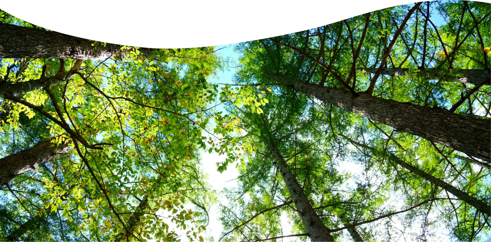
大自然の中で
育まれた生命が -
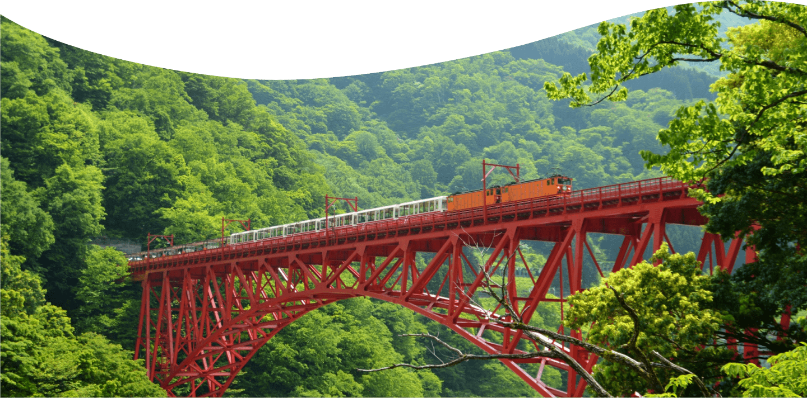
自然と共生する暮らしを支え
-
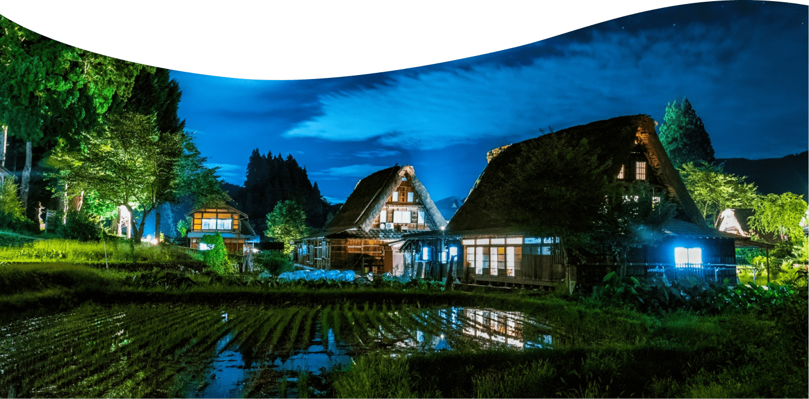
伝統を、鮮やかに残す
-
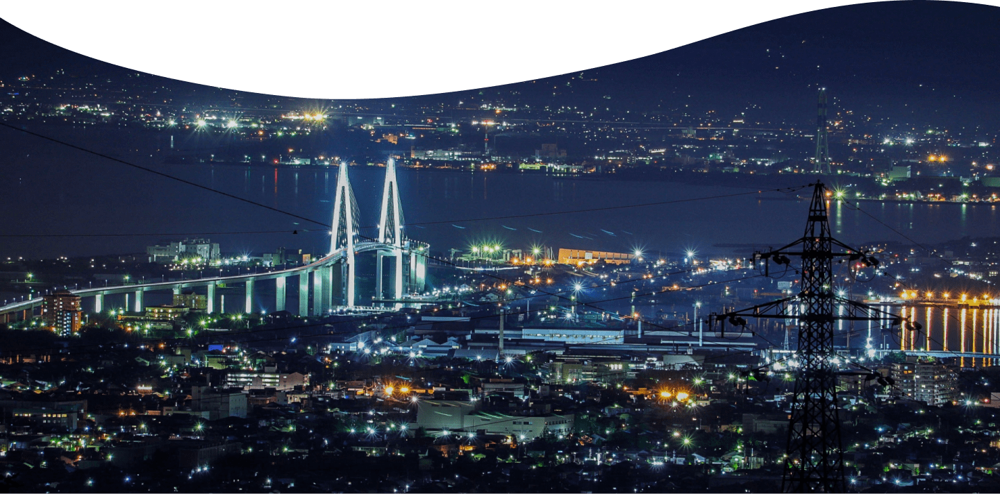
私たちの街を、
明るく照らす -
クロベのキセキが、
暮らしに還る
流木から創られた
エネルギーが、
私たちの暮らしへ
-
かんでんエルファームが製造する木質チップは、電力会社や民間の発電事業者に納入され、火力発電所の「バイオマス燃料」として利用されています。
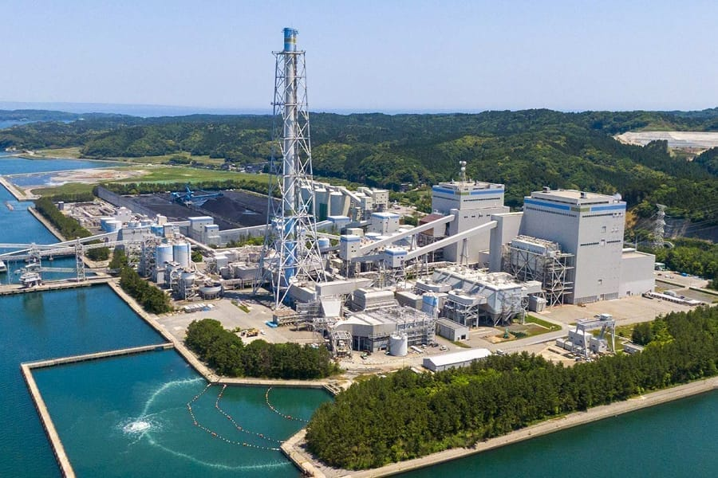
七尾大田火力発電所 （北陸電力）
-
木質燃料専用の「バイオマス発電」やチップと炭を混ぜて燃焼させる「混焼発電」に使われ、クリーンな電力として私たちの暮らしの中に届けられています。
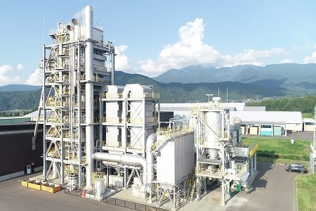
大野バイオマス発電所
（福井グリーンパワー社）
この仕組みにより、「ダムの保全」から「資源の再利用」、そして
「再生可能エネルギーの供給」という、環境にやさしい循環の形を実現させています。